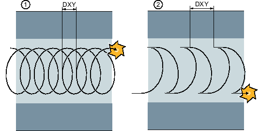
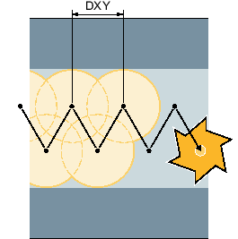

Bearbeitungsart Schruppen Wirbelfräsen
Das Schruppen erfolgt in kreisförmiger Bewegung des Fräsers.
Während dieser Bewegungen wird der Fräser kontinuierlich immer weiter in der Ebene zugestellt. Ist der Fräser die gesamte Nut abgefahren, fährt der Fräser ebenfalls in kreisförmiger Bewegung wieder zurück und nimmt so die nächste Schicht (Zustelltiefe) in Z-Richtung ab. Dieser Vorgang wiederholt sich so oft, bis die voreingestellte Nuttiefe plus Schlichtaufmaß erreicht ist.
① | Wirbelfräsen: Gleichlauf oder Gegenlauf |
② | Wirbelfräsen: Gleichlauf-Gegenlauf |
Randbedingungen beim Wirbelfräsen
Schruppen
1/2 Nutbreite W – Schlichtaufmaß UXY ≤ Fräserdurchmesser
Nutbreite
mindestens 1,15 x Fräserdurchmesser + Schlichtaufmaß
höchstens 2 x Fräserdurchmesser + 2 x Schlichtaufmaß
Radiale Zustellung
mindestens 0,02 x Fräserdurchmesser
höchstens 0,25 x Fräserdurchmesser
Maximale Zustelltiefe ≤ Schnitthöhe des Fräsers
Beachten Sie, dass die Schnitthöhe des Fräsers nicht geprüft werden kann.
Die maximale radiale Zustellung ist vom Fräser abhängig.
Wählen Sie für harte Werkstoffe eine geringere Zustellung.
Bearbeitungsart Schruppen Tauchfräsen
Das Schruppen der Nut erfolgt sequenziell längs der Nut durch senkrechte Eintauchbewegungen des Fräsers mit Arbeitsvorschub. Danach erfolgen ein Rückzug und eine Positionierbewegung zum nächsten Eintauchpunkt.
Abwechselnd wird längs der Nut um den halben Zustellbetrag versetzt jeweils an der linken und der rechten Wand eingetaucht.
Die erste Eintauchbewegung erfolgt am Rand der Nut mit einem Eingriff des Fräsers von einer halben Zustellung abzüglich des Sicherheitsabstandes. (Ist der Sicherheitsabstand größer als die Zustellung also im Freien.) Die maximale Breite der Nute muss für diesen Zyklus kleiner als die doppelte Breite des Fräsers + Schlichtaufmaß sein.
Nach jeder Eintauchbewegung hebt der Fräser ebenfalls mit Arbeitsvorschub um den Sicherheitsabstand ab. Dies geschieht nach Möglichkeit im so genannten Retract-Verfahren, d.h. bei einer Umschlingung des Fräsers von weniger als 180° hebt er unter 45ｰ in Gegenrichtung der Winkelhalbierenden des Umschlingungsbereiches vom Grund ab.
Anschließend fährt der Fräser mit Eilgang über das Material.
Randbedingungen beim Tauchfräsen
Schruppen
1/2 Nutbreite W - Schlichtaufmaß UXY ≤ Fräserdurchmesser
Maximale radiale Zustellung
Die maximale Zustellung ist abhängig von der Schneidenbreite des Fräsers.
Schrittweite
Die seitliche Schrittweite ergibt sich aus der gewünschten Nutbreite, dem Fräserdurchmesser und dem Schlichtaufmaß.
Rückzug
Der Rückzug erfolgt mit Abfahren unter einem Winkel von 45°, wenn der Umschlingungswinkel kleiner 180° ist. Ansonsten erfolgt ein senkrechter Rückzug wie beim Bohren.
Abfahren
Das Abfahren erfolgt senkrecht zur umschlungenen Fläche.
Sicherheitsabstand
Fahren Sie den Sicherheitsabstand über das Ende des Werkstückes hinaus, um Verrundungen der Nutwände an den Enden zu vermeiden.
Beachten Sie, dass die Schneidenbreite des Fräsers für die maximale radiale Zustellung nicht geprüft werden kann.
Bearbeitungsart Vorschlichten
Bleibt zu viel Restmaterial an den Nutwänden stehen, werden überflüssige Ecken auf das Schlichtmaß abgetragen.
Bearbeitungsart Schlichten
Beim Schlichten der Wände fährt der Fräser entlang der Nutwände, wobei er wie beim Schruppen in Z-Richtung ebenfalls wieder Schrittweise zugestellt wird. Hierbei fährt der Fräser um Sicherheitsabstand über den Nutanfang und das Nutende hinaus, um auf der gesamten Länge der Nut eine gleichmäßige Oberfläche der Nutwand zu gewährleisten.
Bearbeitungsart Schlichten Rand
Das Schlichten Rand erfolgt wie das Schlichten, lediglich die letzte Zustellung (Boden schlichten) entfällt.
Bearbeitungsart Schlichten Boden
Beim Schlichten Boden fährt der Fräser in der fertigen Nut einmal hin und einmal zurück.
Bearbeitungsart Anfasen
Beim Anfasen wird die Kante am oberen Rand der Nut gebrochen.

Geometrien beim Anfasen von Innenkonturen
| Hinweis |
Der Schaftfräser verhält sich beim Anfasen wie ein Zentrierer mit einem Spitzenwinkel 90°. |
| Hinweis |
Beim Anfasen von Innenkonturen können folgende Fehlermeldungen auftreten:
|
Weitere Randbedingungen
Schlichten
1/2 Nutbreite W ≤ Fräserdurchmesser
Schlichten Rand
Schlichtaufmaß UXY ≤ Fräserdurchmesser
Anfasen
Spitzenwinkel muss in Werkzeugtabelle eingetragen sein.